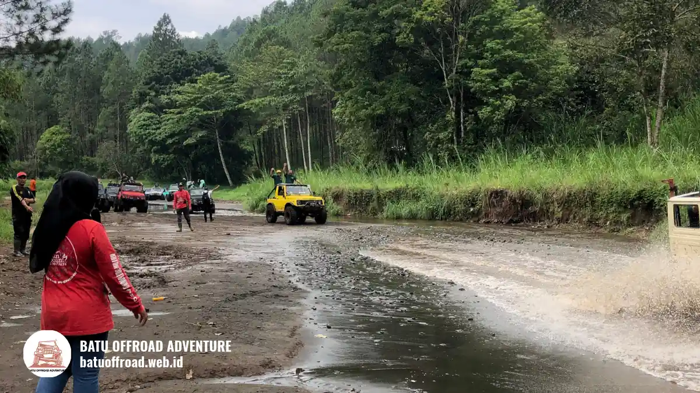

Offroad Batu untuk Keluarga Panduan Aman dan Seru
Offroad Batu untuk keluarga aman dan menyenangkan bila operatornya jelas, pemandunya berpengalaman, dan rutenya sesuai usia serta kondisi tiap anggota keluarga.
- Offroad Batu untuk keluarga umumnya cocok bagi anak, dewasa, dan orang tua yang sehat, dengan syarat rute dan paket disesuaikan.
- Keselamatan bergantung pada kendaraan terawat, driver pemandu berpengalaman, dan aturan operator yang jelas.
- Kota Batu berhawa sejuk dan berkontur, sehingga pakaian, waktu berangkat, dan kondisi cuaca perlu diperhitungkan.
- Batas usia anak dan kebijakan lansia berbeda antar operator, jadi wajib dikonfirmasi sebelum booking.
- Offroad paling nyaman dipadukan dengan aktivitas santai agar semua usia ikut menikmati liburan.
Apa Itu Offroad Batu untuk Keluarga?
Offroad Batu untuk keluarga adalah wisata berkendara jeep di jalur tanah, berbatu, dan berkontur di Kota Batu, dengan pemandu yang mengatur rute serta kecepatan agar sesuai anggota keluarga.
Berbeda dengan offroad kompetitif, format keluarga menekankan keseruan yang terkendali. Pengunjung duduk di kendaraan yang dikemudikan driver pemandu, melewati jalur alam sambil menikmati pemandangan pegunungan di sekitar Coban Talun dan area Kota Batu lainnya.
Konsepnya cocok untuk keluarga karena penumpang tidak perlu bisa menyetir atau memiliki keahlian khusus. Namun, wisata ini tetap melibatkan guncangan, debu, dan permukaan jalan tidak rata. Karena itu, batasannya perlu dipahami sebelum berangkat, terutama untuk anak kecil, ibu hamil, dan orang dengan keluhan punggung, leher, atau jantung.
Siapa Saja yang Cocok Mengikuti Offroad Keluarga di Kota Batu?
Offroad keluarga di Kota Batu umumnya cocok bagi anak yang sudah bisa duduk tegak dengan aman, remaja, dewasa sehat, dan sebagian lansia aktif, selama operator menyesuaikan rute dan kebijakannya.
Tidak semua anggota keluarga punya kebutuhan yang sama. Anak balita sering memiliki batasan usia dan ukuran tubuh yang ditentukan operator. Lansia perlu mempertimbangkan kesehatan sendi, tulang, dan tekanan darah. Ibu hamil umumnya disarankan berkonsultasi dengan dokter sebelum mengikuti aktivitas yang banyak guncangan.
Tabel keputusan sederhana membantu keluarga: jika semua anggota sehat dan nyaman dengan perjalanan berguncang, paket standar biasanya memadai. Jika ada anggota dengan kondisi khusus, pilih rute lebih ringan atau tanyakan opsi alternatif langsung ke operator.
| Kondisi Anggota Keluarga | Rekomendasi Rute / Paket | Tindakan yang Disarankan |
|---|---|---|
| Semua anggota sehat & prima | Paket Standar / Medium Track | Dapat menikmati sensasi guncangan dan rute alami secara optimal. |
| Membawa anak kecil atau lansia aktif | Rute Ringan / Fun Offroad Santai | Minta pengemudi melaju perlahan dan utamakan spot berpemandangan indah. |
| Ibu hamil / keluhan punggung, sendi, & jantung | Opsi Alternatif / Konsultasi Dokter | Konsultasikan ke tenaga medis dan tanyakan jalur wisata alternatif ke operator. |
Mengapa Kota Batu Cocok untuk Wisata Keluarga?
Kota Batu cocok untuk wisata keluarga karena kombinasi udara sejuk, lanskap pegunungan, dan banyak pilihan aktivitas dalam satu wilayah yang relatif kompak, sehingga semua usia mudah mendapat kegiatan.
Menurut BPS Kota Batu dalam publikasi Kota Batu dalam Angka, luas wilayah Kota Batu sekitar 199 kilometer persegi. Wilayah yang tidak terlalu luas ini membuat perpindahan antar destinasi relatif singkat, hal penting bagi keluarga yang membawa anak atau orang tua.
Banyak keluarga menggabungkan offroad dengan wisata alam seperti Coban Talun, kebun, dan area wisata lain. Dengan pengaturan jadwal yang realistis, offroad dapat menjadi bagian pembuka yang seru, sementara sisa hari diisi kegiatan yang lebih tenang.
Apa Manfaat Offroad Batu untuk Keluarga?
Manfaat utama offroad Batu untuk keluarga adalah pengalaman bersama yang seru, pemandangan alam yang segar, dan kesempatan berinteraksi tanpa gangguan gawai, asalkan perjalanan dilakukan dengan aman.
Beberapa manfaat yang umum dirasakan:
- Waktu berkualitas: seluruh anggota keluarga mengalami pengalaman yang sama dan punya bahan cerita bersama.
- Paparan alam: udara pegunungan dan pemandangan membantu suasana lebih rileks.
- Pengalaman baru bagi anak: anak belajar tentang medan, alam, dan aturan keselamatan.
- Fleksibilitas: durasi dan rute dapat disesuaikan dengan kebutuhan rombongan.
Manfaat ini bersifat pengalaman, bukan jaminan hasil tertentu. Kenyamanan tetap bergantung pada kondisi cuaca, kesehatan peserta, dan layanan operator.
Bagaimana Cara Kerja Wisata Offroad di Coban Talun dan Sekitarnya?
Wisata offroad di sekitar Coban Talun umumnya dimulai dari pendaftaran dan arahan keselamatan, dilanjutkan perjalanan jeep dengan driver pemandu melewati jalur alam, lalu berhenti di beberapa titik untuk beristirahat atau berfoto.
Alurnya biasanya sederhana. Pertama, keluarga memesan paket dan menyampaikan jumlah serta usia peserta. Kedua, operator seperti Batu Offroad Adventure menjelaskan aturan, pembagian kursi, dan perlengkapan. Ketiga, perjalanan berlangsung dengan driver yang mengenal medan. Terakhir, rombongan kembali ke titik awal.
Rute, durasi, dan titik berhenti dapat bervariasi tergantung paket dan kondisi jalur pada hari tersebut. Hujan, misalnya, dapat mengubah tingkat kesulitan jalan. Karena itu, tanyakan kepastian rute dan opsi penyesuaian saat memesan.

Petualangan offroad Batu untuk keluarga melintasi jalur sungai berbatu dengan pendampingan driver pemandu profesional.
Faktor Keselamatan Apa yang Perlu Diperiksa Sebelum Booking?
Sebelum booking, periksa kondisi kendaraan, pengalaman driver pemandu, aturan sabuk atau pegangan, kebijakan usia, serta prosedur saat cuaca buruk, karena faktor-faktor ini paling menentukan keselamatan keluarga.
Keselamatan jalan adalah isu global. WHO dalam Global Status Report on Road Safety 2023 melaporkan sekitar 1,19 juta kematian akibat kecelakaan lalu lintas pada tahun 2021. Angka ini mengingatkan bahwa perjalanan berkendara selalu memerlukan kehati-hatian, termasuk di jalur wisata.
Daftar periksa praktis untuk keluarga:
- Tanyakan apakah kendaraan dirawat dan diperiksa secara berkala.
- Pastikan driver mengenal medan di Kota Batu dan memberi arahan sebelum berangkat.
- Konfirmasi aturan duduk, pegangan, dan perlengkapan pelindung.
- Tanyakan kebijakan usia anak dan kondisi kesehatan peserta.
- Tanyakan prosedur jika hujan deras atau jalur licin.
Operator yang terbuka menjawab pertanyaan-pertanyaan ini biasanya lebih meyakinkan daripada operator yang menghindarinya. Rujukan tambahan tentang keselamatan jalan tersedia di situs resmi WHO tentang cedera lalu lintas.
Apa yang Perlu Disiapkan Keluarga Sebelum Berangkat?
Keluarga sebaiknya menyiapkan pakaian berlapis, alas kaki tertutup, masker atau penutup hidung, kacamata, air minum, serta obat pribadi, karena jalur berdebu dan suhu di Kota Batu bisa berubah cepat.
Persiapan berikut umumnya membantu:
- Pakaian: jaket tipis dan celana panjang untuk melindungi dari angin serta debu.
- Alas kaki: sepatu atau sandal gunung yang kokoh, bukan sandal jepit.
- Perlindungan: masker, kacamata, dan topi bila diperlukan.
- Kebutuhan anak: pakaian ganti, camilan, dan air minum.
- Barang berharga: simpan dengan aman agar tidak jatuh saat kendaraan berguncang.
Makan secukupnya sebelum berangkat. Perut terlalu kenyang atau kosong dapat membuat sebagian orang mudah mual. Bagi anggota keluarga yang mudah mabuk perjalanan, tanyakan saran ke dokter atau apoteker sebelum berangkat.
Apa Kesalahan Umum Keluarga Saat Offroad di Batu?
Kesalahan umum keluarga saat offroad di Batu meliputi tidak menanyakan batas usia, memakai alas kaki tidak sesuai, mengabaikan kondisi kesehatan anggota, dan menjadwalkan terlalu banyak kegiatan dalam satu hari.
Beberapa kesalahan yang sering terjadi:
- Mengandalkan asumsi, bukan konfirmasi. Kebijakan tiap operator berbeda, sehingga pertanyaan usia dan kesehatan perlu diajukan langsung.
- Berangkat tanpa perlindungan debu. Anak dan lansia bisa terganggu pernapasannya.
- Memaksakan anggota yang ragu. Rasa takut atau tidak nyaman adalah sinyal untuk memilih rute lebih ringan.
- Jadwal terlalu padat. Offroad lalu langsung berpindah ke banyak destinasi membuat anak dan lansia cepat lelah.
- Mengabaikan prakiraan cuaca. Hujan dapat membuat jalur lebih licin.
Menghindari kesalahan ini tidak memerlukan biaya tambahan, hanya perencanaan yang cermat dan komunikasi yang jelas dengan operator.
Bagaimana Membandingkan Paket Offroad untuk Keluarga?
Bandingkan paket offroad keluarga berdasarkan durasi, rute, jumlah penumpang per kendaraan, kebijakan usia, perlengkapan, dan fleksibilitas jadwal, bukan hanya berdasarkan harga yang tertera.
Parameter penilaian yang membantu:
- Durasi: apakah sesuai ketahanan anak dan orang tua.
- Tingkat guncangan: apakah tersedia rute lebih ringan.
- Kapasitas: apakah kursi cukup nyaman untuk seluruh rombongan.
- Kebijakan: batas usia, kondisi kesehatan, dan pembatalan karena cuaca.
- Layanan tambahan: titik berhenti foto, waktu istirahat, dan bantuan pemandu.
Setiap opsi punya batasan. Paket singkat lebih ramah bagi anak kecil tetapi memberi pengalaman lebih terbatas. Paket panjang menawarkan eksplorasi lebih luas tetapi lebih melelahkan. Pilihan terbaik adalah yang paling cocok dengan kondisi rombongan, bukan yang paling panjang atau paling murah.
Bagaimana Menyesuaikan Offroad untuk Anak, Dewasa, dan Lansia?
Penyesuaian dilakukan dengan memilih rute dan durasi sesuai anggota paling rentan, menetapkan posisi duduk yang aman, serta menyediakan waktu istirahat tambahan agar semua tetap nyaman.
Untuk anak, fokus utama adalah usia, tinggi badan, dan kemampuan duduk stabil. Untuk orang dewasa, perhatikan riwayat keluhan punggung, leher, atau tekanan darah. Jika ragu, konsultasikan dengan dokter. Informasi di artikel ini bersifat umum dan tidak menggantikan saran tenaga kesehatan.
Kesimpulan
Offroad Batu untuk keluarga dapat menjadi pengalaman seru dan aman bila direncanakan dengan baik. Konfirmasi kebijakan usia dan kesehatan, periksa kondisi kendaraan dan pengalaman driver, siapkan perlengkapan yang tepat, lalu padukan dengan aktivitas santai di Kota Batu.
Ingin merasakan serunya langsung? Hubungi Batu Offroad Adventure di 0812-3398-9707 untuk info paket dan booking.
FAQ
-
Apakah offroad di Batu aman untuk anak-anak dan lansia?
Offroad di Kota Batu aman untuk anak-anak dan lansia yang sehat selama memilih operator terpercaya dengan pengemudi berpengalaman, armada terawat, dan rute santai (fun offroad) yang disesuaikan dengan kondisi fisik peserta. -
Berapa batas usia minimal anak yang diperbolehkan ikut offroad keluarga?
Batas usia anak umumnya ditentukan oleh operator, biasanya anak yang sudah bisa duduk tegak dan stabil secara mandiri (sekitar usia 3-4 tahun ke atas). Konfirmasikan usia dan kebijakan operator sebelum melakukan booking. -
Apa saja perlengkapan yang wajib disiapkan keluarga sebelum berangkat?
Siapkan pakaian berlapis (jaket tipis dan celana panjang), alas kaki tertutup yang kokoh, masker atau buff pelindung debu, kacamata hitam, air minum, obat pribadi, serta pakaian ganti untuk anak-anak. -
Bagaimana cara booking paket offroad keluarga di Batu Offroad Adventure?
Anda dapat langsung menghubungi layanan reservasi Batu Offroad Adventure melalui WhatsApp di 0812-3398-9707 untuk konsultasi rute ramah keluarga, pilihan jadwal, dan informasi ketersediaan armada.